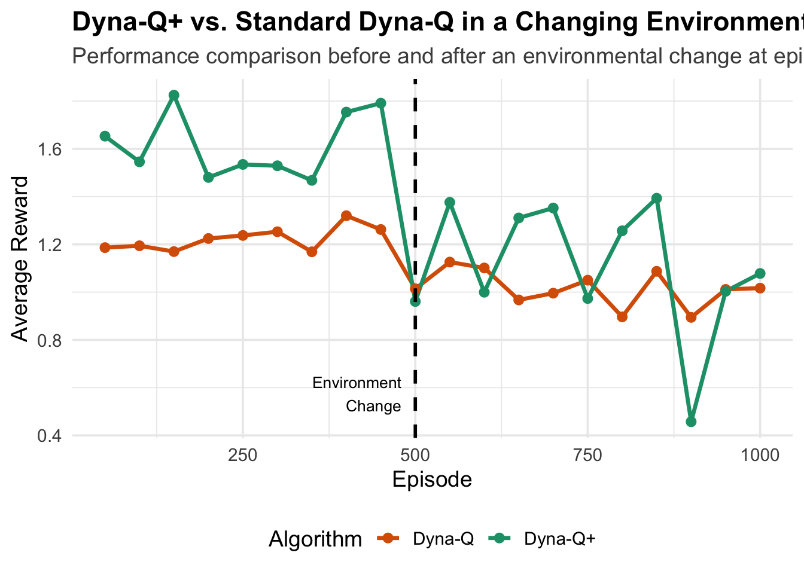
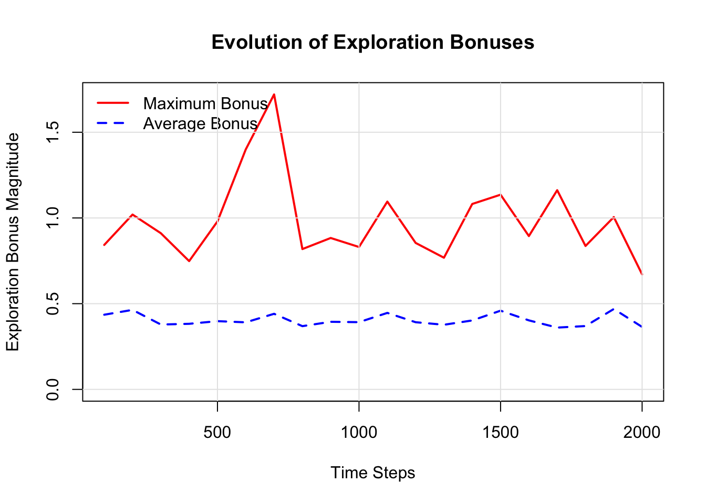

Chapter 16 Policy Gradients: Direct Optimization of Action Selection in Reinforcement Learning
16.1 Introduction
While value-based methods like Q-learning and Dyna focus on learning the worth of actions to derive optimal policies, they represent an indirect approach to the fundamental problem of reinforcement learning: selecting good actions. Policy gradient methods take a more direct path, explicitly parameterizing and optimizing the policy itself. This shift in perspective opens new possibilities for handling complex action spaces, stochastic optimal policies, and scenarios where the policy structure itself carries important information.
The elegance of policy gradients lies in their conceptual clarity. Rather than learning values and hoping they translate into good action choices, we directly adjust the parameters that govern action selection. This approach proves particularly valuable when dealing with continuous action spaces where discrete value functions become unwieldy, or when the optimal policy is inherently stochastic and cannot be captured by deterministic value-based approaches.
REINFORCE, introduced by Williams in 1992, stands as the foundational policy gradient algorithm. Despite its simplicity, it embodies the core principles that underpin modern policy optimization methods. By treating each episode as a sample from the policy’s trajectory distribution and using the policy gradient theorem to estimate improvement directions, REINFORCE establishes a direct link between observed rewards and parameter updates.
The method’s relationship to supervised learning is illuminating. Where supervised learning adjusts parameters to match target outputs, policy gradients adjust parameters to increase the probability of actions that led to high rewards. This connection reveals why policy gradients can struggle with high variance: unlike supervised learning with clear targets, reinforcement learning must estimate the value of actions from noisy, delayed rewards.
16.2 Theoretical Framework
16.2.1 The Policy Gradient Theorem
Policy gradient methods parameterize the policy as \(\pi(a|s, \theta)\), where \(\theta\) represents learnable parameters. The objective is to maximize the expected return under this policy. For episodic tasks, we can express this as maximizing:
\[J(\theta) = \mathbb{E}_{\tau \sim \pi_\theta}[R(\tau)]\]
where \(\tau\) represents a trajectory \((s_0, a_0, r_1, s_1, a_1, r_2, \ldots, s_{T-1}, a_{T-1}, r_T, s_T)\) and \(R(\tau) = \sum_{t=0}^{T-1} \gamma^t r_{t+1}\) is the discounted return.
The fundamental challenge lies in computing the gradient \(\nabla_\theta J(\theta)\). The policy gradient theorem provides the solution:
\[\nabla_\theta J(\theta) = \mathbb{E}_{\tau \sim \pi_\theta}\left[\sum_{t=0}^{T-1} \nabla_\theta \log \pi(a_t|s_t, \theta) \cdot R_t(\tau)\right]\]
where \(R_t(\tau) = \sum_{k=t}^{T-1} \gamma^{k-t} r_{k+1}\) is the return from time step \(t\) onward.
This formulation reveals several key insights. The gradient is proportional to \(\nabla_\theta \log \pi(a_t|s_t, \theta)\), which increases the probability of actions when the return is positive and decreases it when negative. The magnitude of adjustment scales with the return magnitude, creating a natural weighting mechanism that emphasizes consequential experiences.
16.2.2 REINFORCE Algorithm
The REINFORCE algorithm directly implements the policy gradient theorem through Monte Carlo estimation:
For each episode: 1. Generate trajectory \(\tau = (s_0, a_0, r_1, \ldots, s_T)\) following \(\pi(\cdot|s, \theta)\) 2. For each time step \(t\) in the trajectory: - Compute return: \(R_t = \sum_{k=t}^{T-1} \gamma^{k-t} r_{k+1}\) - Compute gradient estimate: \(\widehat{g}_t = \nabla_\theta \log \pi(a_t|s_t, \theta) \cdot R_t\) 3. Update parameters: \(\theta \leftarrow \theta + \alpha \sum_{t=0}^{T-1} \widehat{g}_t\)
The algorithm’s elegance comes with a cost: high variance in gradient estimates. Since each trajectory provides only one sample of the policy’s behavior, the gradient estimates can vary dramatically between episodes, leading to unstable learning. This variance stems from two sources: the inherent randomness in trajectory generation and the use of full episode returns, which accumulate noise across multiple time steps.
16.2.3 Baseline Subtraction and Variance Reduction
A crucial enhancement to basic REINFORCE involves subtracting a baseline from the returns without introducing bias. The modified gradient becomes:
\[\nabla_\theta J(\theta) = \mathbb{E}_{\tau \sim \pi_\theta}\left[\sum_{t=0}^{T-1} \nabla_\theta \log \pi(a_t|s_t, \theta) \cdot (R_t(\tau) - b(s_t))\right]\]
The baseline \(b(s_t)\) can be any function of the state that does not depend on the action. A natural choice is the state value function \(V(s_t)\), leading to the advantage function \(A(s_t, a_t) = R_t(\tau) - V(s_t)\). This represents how much better the chosen action was compared to the average expected return from that state.
When \(V(s_t)\) is approximated by a learned value function, the resulting algorithm becomes Actor-Critic, where the policy (actor) is updated using advantages estimated by the value function (critic). This combination leverages both the direct policy optimization of policy gradients and the sample efficiency of value-based methods.
16.2.4 Softmax Policy Parameterization
For discrete action spaces, a common parameterization uses the softmax function:
\[\pi(a|s, \theta) = \frac{e^{\theta_a^T \phi(s)}}{\sum_{a'} e^{\theta_{a'}^T \phi(s)}}\]
where \(\phi(s)\) represents state features and \(\theta_a\) are the parameters for action \(a\). The log probability becomes:
\[\log \pi(a|s, \theta) = \theta_a^T \phi(s) - \log \sum_{a'} e^{\theta_{a'}^T \phi(s)}\]
The gradient with respect to the parameters for action \(a\) is:
\[\nabla_{\theta_a} \log \pi(a|s, \theta) = \phi(s) - \pi(a|s, \theta) \phi(s) = \phi(s)(1 - \pi(a|s, \theta))\]
For actions not taken, the gradient is simply \(-\pi(a'|s, \theta) \phi(s)\), which decreases their probabilities proportionally.
16.3 Implementation in R
Building upon our previous reinforcement learning implementations, we now develop a policy gradient framework that directly optimizes action selection policies.
16.3.1 Environment and Feature Representation
We begin with the same 10-state environment used in our Dyna examples, but now we need to consider how to represent states for policy parameterization:
# Environment parameters
n_states <- 10
n_actions <- 2
gamma <- 0.95
terminal_state <- n_states
# Environment setup (consistent with previous examples)
set.seed(42)
transition_model <- array(0, dim = c(n_states, n_actions, n_states))
reward_model <- array(0, dim = c(n_states, n_actions, n_states))
for (s in 1:(n_states - 1)) {
transition_model[s, 1, s + 1] <- 0.9
transition_model[s, 1, sample(1:n_states, 1)] <- 0.1
transition_model[s, 2, sample(1:n_states, 1)] <- 0.8
transition_model[s, 2, sample(1:n_states, 1)] <- 0.2
for (s_prime in 1:n_states) {
reward_model[s, 1, s_prime] <- ifelse(s_prime == n_states, 1.0, 0.1 * runif(1))
reward_model[s, 2, s_prime] <- ifelse(s_prime == n_states, 0.5, 0.05 * runif(1))
}
}
transition_model[n_states, , ] <- 0
reward_model[n_states, , ] <- 0
# Environment interaction function
sample_env <- function(s, a) {
probs <- transition_model[s, a, ]
s_prime <- sample(1:n_states, 1, prob = probs)
reward <- reward_model[s, a, s_prime]
list(s_prime = s_prime, reward = reward)
}
# Feature extraction function
extract_features <- function(state) {
# Simple one-hot encoding
features <- rep(0, n_states)
features[state] <- 1
return(features)
}16.3.2 Softmax Policy Implementation
We implement a softmax policy that maps state features to action probabilities:
softmax_policy <- function(state, theta) {
features <- extract_features(state)
# Compute logits for each action
logits <- rep(0, n_actions)
for (a in 1:n_actions) {
# Each action has its own parameter vector
action_params <- theta[((a-1) * n_states + 1):(a * n_states)]
logits[a] <- sum(action_params * features)
}
# Apply softmax
exp_logits <- exp(logits - max(logits)) # Subtract max for numerical stability
probabilities <- exp_logits / sum(exp_logits)
return(probabilities)
}
# Sample action from policy
sample_action <- function(state, theta) {
probs <- softmax_policy(state, theta)
action <- sample(1:n_actions, 1, prob = probs)
return(list(action = action, probability = probs[action]))
}
# Compute log probability of an action
log_prob <- function(state, action, theta) {
probs <- softmax_policy(state, theta)
return(log(probs[action]))
}
# Compute gradient of log probability
grad_log_prob <- function(state, action, theta) {
features <- extract_features(state)
probs <- softmax_policy(state, theta)
# Initialize gradient vector
grad <- rep(0, length(theta))
for (a in 1:n_actions) {
param_indices <- ((a-1) * n_states + 1):(a * n_states)
if (a == action) {
# Chosen action: gradient is features * (1 - probability)
grad[param_indices] <- features * (1 - probs[a])
} else {
# Unchosen action: gradient is -features * probability
grad[param_indices] <- -features * probs[a]
}
}
return(grad)
}16.3.3 REINFORCE Implementation
The core REINFORCE algorithm generates episodes, computes returns, and updates policy parameters:
reinforce <- function(episodes = 1000, alpha = 0.01, baseline = FALSE) {
# Initialize policy parameters
n_params <- n_states * n_actions
theta <- rnorm(n_params, 0, 0.1)
# Storage for baseline if used
if (baseline) {
baseline_values <- rep(0, n_states)
baseline_counts <- rep(0, n_states)
}
# Storage for performance tracking
episode_returns <- numeric(episodes)
episode_lengths <- numeric(episodes)
for (ep in 1:episodes) {
# Generate episode
trajectory <- list()
s <- 1
step <- 0
while (s != terminal_state && step < 100) { # Prevent infinite episodes
step <- step + 1
# Sample action from current policy
action_result <- sample_action(s, theta)
a <- action_result$action
# Take action and observe outcome
outcome <- sample_env(s, a)
s_prime <- outcome$s_prime
r <- outcome$reward
# Store experience
trajectory[[step]] <- list(
state = s,
action = a,
reward = r,
log_prob = log_prob(s, a, theta)
)
s <- s_prime
}
# Compute returns for each time step
T <- length(trajectory)
returns <- numeric(T)
G <- 0
for (t in T:1) {
G <- trajectory[[t]]$reward + gamma * G
returns[t] <- G
}
# Update baseline if used
if (baseline && T > 0) {
for (t in 1:T) {
state <- trajectory[[t]]$state
baseline_counts[state] <- baseline_counts[state] + 1
# Running average update
baseline_values[state] <- baseline_values[state] +
(returns[t] - baseline_values[state]) / baseline_counts[state]
}
}
# Compute policy gradient and update parameters
gradient <- rep(0, n_params)
for (t in 1:T) {
state <- trajectory[[t]]$state
action <- trajectory[[t]]$action
# Advantage estimation
advantage <- returns[t]
if (baseline) {
advantage <- advantage - baseline_values[state]
}
# Accumulate gradient
grad_log_pi <- grad_log_prob(state, action, theta)
gradient <- gradient + grad_log_pi * advantage
}
# Update parameters
theta <- theta + alpha * gradient
# Record performance
if (T > 0) {
episode_returns[ep] <- returns[1] # Total episode return
episode_lengths[ep] <- T
}
}
result <- list(
theta = theta,
episode_returns = episode_returns,
episode_lengths = episode_lengths
)
if (baseline) {
result$baseline_values <- baseline_values
}
return(result)
}16.3.4 Actor-Critic Implementation
Building upon REINFORCE, we implement a basic Actor-Critic method that learns both a policy and a value function:
actor_critic <- function(episodes = 1000, alpha_actor = 0.01, alpha_critic = 0.1) {
# Initialize policy parameters (actor)
n_params <- n_states * n_actions
theta <- rnorm(n_params, 0, 0.1)
# Initialize value function parameters (critic)
v_weights <- rnorm(n_states, 0, 0.1)
# Performance tracking
episode_returns <- numeric(episodes)
episode_lengths <- numeric(episodes)
td_errors <- list()
for (ep in 1:episodes) {
s <- 1
step <- 0
episode_td_errors <- numeric()
while (s != terminal_state && step < 100) {
step <- step + 1
# Current state value
v_s <- v_weights[s]
# Sample action from policy
action_result <- sample_action(s, theta)
a <- action_result$action
# Take action
outcome <- sample_env(s, a)
s_prime <- outcome$s_prime
r <- outcome$reward
# Next state value (0 if terminal)
v_s_prime <- ifelse(s_prime == terminal_state, 0, v_weights[s_prime])
# TD error (this is our advantage estimate)
td_error <- r + gamma * v_s_prime - v_s
episode_td_errors <- c(episode_td_errors, td_error)
# Update critic (value function)
v_weights[s] <- v_weights[s] + alpha_critic * td_error
# Update actor (policy)
grad_log_pi <- grad_log_prob(s, a, theta)
theta <- theta + alpha_actor * grad_log_pi * td_error
s <- s_prime
}
# Record episode statistics
episode_lengths[ep] <- step
td_errors[[ep]] <- episode_td_errors
# Estimate episode return by running a test episode
if (ep %% 50 == 0) {
test_return <- evaluate_policy(theta)
episode_returns[ep] <- test_return
}
}
return(list(
theta = theta,
v_weights = v_weights,
episode_returns = episode_returns,
episode_lengths = episode_lengths,
td_errors = td_errors
))
}
# Helper function to evaluate current policy
evaluate_policy <- function(theta, n_episodes = 10) {
total_return <- 0
for (i in 1:n_episodes) {
s <- 1
episode_return <- 0
step <- 0
while (s != terminal_state && step < 100) {
step <- step + 1
action_result <- sample_action(s, theta)
outcome <- sample_env(s, action_result$action)
episode_return <- episode_return + outcome$reward * (gamma ^ (step - 1))
s <- outcome$s_prime
}
total_return <- total_return + episode_return
}
return(total_return / n_episodes)
}16.4 Experimental Analysis
16.4.1 Comparison of Policy Gradient Variants
We compare REINFORCE with and without baselines, and Actor-Critic to understand their relative performance characteristics:
comparative_experiment <- function() {
set.seed(123)
# Run different variants
reinforce_basic <- reinforce(episodes = 1000, alpha = 0.005, baseline = FALSE)
reinforce_baseline <- reinforce(episodes = 1000, alpha = 0.005, baseline = TRUE)
ac_result <- actor_critic(episodes = 1000, alpha_actor = 0.005, alpha_critic = 0.01)
# Create comparison data frame
episodes_seq <- 1:1000
# For fair comparison, evaluate all policies at the same intervals
eval_episodes <- seq(50, 1000, by = 50)
basic_returns <- numeric(1000)
baseline_returns <- numeric(1000)
ac_returns <- ac_result$episode_returns
# Evaluate REINFORCE variants at specified intervals
for (i in eval_episodes) {
if (i <= length(reinforce_basic$episode_returns)) {
# Use stored episode returns instead of re-evaluating
basic_returns[i] <- mean(reinforce_basic$episode_returns[max(1, i-10):i], na.rm = TRUE)
baseline_returns[i] <- mean(reinforce_baseline$episode_returns[max(1, i-10):i], na.rm = TRUE)
}
}
# Interpolate for smoother plotting
for (i in 1:1000) {
if (basic_returns[i] == 0 && i > 1) {
basic_returns[i] <- basic_returns[i-1]
baseline_returns[i] <- baseline_returns[i-1]
}
if (ac_returns[i] == 0 && i > 1) {
ac_returns[i] <- ac_returns[i-1]
}
}
comparison_data <- data.frame(
episode = rep(episodes_seq, 3),
algorithm = rep(c("REINFORCE", "REINFORCE + Baseline", "Actor-Critic"),
each = 1000),
return = c(basic_returns, baseline_returns, ac_returns)
)
return(list(
data = comparison_data,
basic_result = reinforce_basic,
baseline_result = reinforce_baseline,
ac_result = ac_result
))
}16.4.1.1 Visualizing Policy Gradient Performance
Let’s run the comparative experiment and visualize the learning curves:
if (!require("ggplot2", quietly = TRUE)) install.packages("ggplot2")
if (!require("dplyr", quietly = TRUE)) install.packages("dplyr")##
## Attaching package: 'dplyr'## The following object is masked from 'package:gridExtra':
##
## combine## The following objects are masked from 'package:stats':
##
## filter, lag## The following objects are masked from 'package:base':
##
## intersect, setdiff, setequal, unionlibrary(ggplot2)
library(dplyr)
# Run comparative experiment
experiment_results <- comparative_experiment()
plot_data <- experiment_results$data
# Filter out zero values for cleaner visualization
plot_data <- plot_data %>%
filter(return != 0) %>%
group_by(algorithm) %>%
arrange(episode) %>%
# Apply some smoothing for visualization
mutate(smoothed_return = zoo::rollmean(return, k = 3, fill = NA, align = "right"))
ggplot(plot_data, aes(x = episode, y = smoothed_return, color = algorithm)) +
geom_line(size = 1.2, alpha = 0.8) +
geom_smooth(method = "loess", se = FALSE, span = 0.3, size = 0.8) +
labs(
title = "Policy Gradient Methods Comparison",
subtitle = "Learning curves showing convergence behavior of different policy gradient variants",
x = "Episode",
y = "Average Return",
color = "Algorithm"
) +
theme_minimal(base_size = 14) +
scale_color_manual(values = c(
"REINFORCE" = "#e31a1c",
"REINFORCE + Baseline" = "#1f78b4",
"Actor-Critic" = "#33a02c"
)) +
theme(
legend.position = "bottom",
plot.title = element_text(face = "bold"),
plot.subtitle = element_text(color = "grey30")
)## `geom_smooth()` using formula = 'y ~ x'## Warning: Removed 6 rows containing non-finite outside the scale range (`stat_smooth()`).## Warning: Removed 6 rows containing missing values or values outside the scale range (`geom_line()`).
16.4.2 Learning Rate Sensitivity Analysis
Policy gradients are particularly sensitive to learning rates due to their high variance. Let’s analyze this relationship:
learning_rate_experiment <- function() {
learning_rates <- c(0.001, 0.005, 0.01, 0.05, 0.1)
results <- list()
for (i in seq_along(learning_rates)) {
set.seed(42) # Consistent starting conditions
lr <- learning_rates[i]
result <- reinforce(episodes = 500, alpha = lr, baseline = TRUE)
# Calculate final performance (average of last 50 episodes)
final_episodes <- max(1, length(result$episode_returns) - 49):length(result$episode_returns)
final_performance <- mean(result$episode_returns[final_episodes], na.rm = TRUE)
# Calculate convergence speed (episode where performance first exceeds threshold)
threshold <- 0.5 # Arbitrary threshold for "good" performance
convergence_episode <- which(result$episode_returns > threshold)[1]
if (is.na(convergence_episode)) convergence_episode <- 500
results[[i]] <- list(
learning_rate = lr,
final_performance = final_performance,
convergence_episode = convergence_episode,
episode_returns = result$episode_returns
)
}
return(results)
}
# Visualization function for learning rate analysis
plot_learning_rate_analysis <- function(lr_results) {
# Extract summary statistics
lr_values <- sapply(lr_results, function(x) x$learning_rate)
final_perfs <- sapply(lr_results, function(x) x$final_performance)
convergence_eps <- sapply(lr_results, function(x) x$convergence_episode)
par(mfrow = c(1, 2), mar = c(5, 4, 4, 2) + 0.1)
# Plot 1: Final performance vs learning rate
plot(lr_values, final_perfs, type = "b", pch = 16, col = "darkblue",
xlab = "Learning Rate", ylab = "Final Average Return",
main = "Final Performance vs Learning Rate",
log = "x") # Log scale for learning rate
grid(lty = 1, col = "gray90")
# Plot 2: Convergence speed vs learning rate
plot(lr_values, convergence_eps, type = "b", pch = 16, col = "darkred",
xlab = "Learning Rate", ylab = "Episodes to Convergence",
main = "Convergence Speed vs Learning Rate",
log = "x")
grid(lty = 1, col = "gray90")
par(mfrow = c(1, 1))
}16.4.2.1 Running the Learning Rate Analysis
# Run the analysis
lr_results <- learning_rate_experiment()
# Create summary table
lr_summary <- data.frame(
learning_rate = sapply(lr_results, function(x) x$learning_rate),
final_performance = sapply(lr_results, function(x) round(x$final_performance, 3)),
convergence_episode = sapply(lr_results, function(x) x$convergence_episode)
)
if (!require("knitr", quietly = TRUE)) install.packages("knitr")
knitr::kable(lr_summary,
caption = "Learning Rate Sensitivity Analysis Results",
col.names = c("Learning Rate", "Final Performance", "Episodes to Convergence"),
align = 'c')| Learning Rate | Final Performance | Episodes to Convergence |
|---|---|---|
| 0.001 | 0.869 | 1 |
| 0.005 | 0.890 | 1 |
| 0.010 | 0.887 | 1 |
| 0.050 | 0.946 | 1 |
| 0.100 | 0.964 | 1 |

16.4.3 Variance Analysis of Gradient Estimates
One of the key challenges in policy gradients is the high variance of gradient estimates. Let’s analyze this:
variance_analysis <- function() {
set.seed(123)
# Run REINFORCE and track gradient magnitudes
n_params <- n_states * n_actions
theta <- rnorm(n_params, 0, 0.1)
gradient_magnitudes <- numeric()
gradient_variances <- list()
episode_returns <- numeric()
for (ep in 1:100) { # Shorter run for detailed analysis
# Generate episode
trajectory <- list()
s <- 1
step <- 0
while (s != terminal_state && step < 50) {
step <- step + 1
action_result <- sample_action(s, theta)
outcome <- sample_env(s, action_result$action)
trajectory[[step]] <- list(
state = s,
action = action_result$action,
reward = outcome$reward
)
s <- outcome$s_prime
}
if (step > 0) {
# Compute returns
T <- length(trajectory)
returns <- numeric(T)
G <- 0
for (t in T:1) {
G <- trajectory[[t]]$reward + gamma * G
returns[t] <- G
}
episode_returns[ep] <- returns[1]
# Compute gradient for this episode
gradient <- rep(0, n_params)
step_gradients <- list()
for (t in 1:T) {
state <- trajectory[[t]]$state
action <- trajectory[[t]]$action
grad_log_pi <- grad_log_prob(state, action, theta)
step_gradient <- grad_log_pi * returns[t]
gradient <- gradient + step_gradient
step_gradients[[t]] <- step_gradient
}
gradient_magnitudes[ep] <- sqrt(sum(gradient^2))
# Store individual step gradients for variance analysis
if (length(step_gradients) > 1) {
step_gradient_matrix <- do.call(rbind, step_gradients)
gradient_variances[[ep]] <- apply(step_gradient_matrix, 2, var)
}
}
}
return(list(
gradient_magnitudes = gradient_magnitudes,
gradient_variances = gradient_variances,
episode_returns = episode_returns
))
}
# Visualization of variance patterns
plot_variance_analysis <- function() {
var_data <- variance_analysis()
episodes <- 1:length(var_data$gradient_magnitudes)
par(mfrow = c(2, 1), mar = c(4, 4, 3, 2))
# Plot gradient magnitudes over episodes
plot(episodes, var_data$gradient_magnitudes, type = "l",
xlab = "Episode", ylab = "Gradient Magnitude",
main = "Gradient Magnitude Evolution",
col = "blue", lwd = 2)
grid(lty = 1, col = "gray90")
# Plot relationship between returns and gradient magnitudes
valid_indices <- !is.na(var_data$episode_returns) & !is.na(var_data$gradient_magnitudes)
plot(var_data$episode_returns[valid_indices],
var_data$gradient_magnitudes[valid_indices],
xlab = "Episode Return", ylab = "Gradient Magnitude",
main = "Return vs Gradient Magnitude",
pch = 16, col = "red")
# Add trend line
if (sum(valid_indices) > 2) {
lm_fit <- lm(var_data$gradient_magnitudes[valid_indices] ~
var_data$episode_returns[valid_indices])
abline(lm_fit, col = "darkred", lwd = 2)
}
grid(lty = 1, col = "gray90")
par(mfrow = c(1, 1))
}
16.5 Discussion and Implementation Considerations
Policy gradient methods represent a fundamental shift in how we approach reinforcement learning problems. Rather than indirectly deriving policies from value estimates, they optimize the policy directly, offering both conceptual clarity and practical advantages in specific domains. This directness comes with trade-offs that illuminate deeper principles about learning and optimization in stochastic environments.
The high variance inherent in policy gradient estimates reflects a fundamental challenge in reinforcement learning: the credit assignment problem. When an episode yields high rewards, which actions deserve credit? REINFORCE’s approach of crediting all actions in proportion to the total return is statistically unbiased but creates substantial noise in the learning signal. Each episode provides only one sample of the policy’s behavior, and the full episode return conflates the effects of all decisions made during that trajectory.
Baseline subtraction addresses this variance problem through a clever insight: we can subtract any state-dependent function from the returns without introducing bias, since the expectation of the gradient of the log probability times the baseline is zero. The optimal baseline minimizes variance and turns out to be the value function itself, leading naturally to Actor-Critic methods. This connection reveals why Actor-Critic algorithms often outperform pure policy gradient approaches—they leverage the variance reduction benefits of value function learning while maintaining the policy optimization focus.
The choice of policy parameterization profoundly influences both the optimization landscape and the final solution quality. Softmax policies naturally handle discrete action spaces and provide smooth gradients, but they impose limitations in multi-modal or complex action selection scenarios. The parameterization also determines which policies the algorithm can represent—a critical consideration often overlooked in implementation. Linear parameterizations restrict the policy to relatively simple decision boundaries, while neural network parameterizations enable more complex behaviors at the cost of increased optimization difficulty.
Learning rate selection in policy gradients requires more care than in supervised learning due to the non-stationary nature of the optimization problem. As the policy changes, the distribution of states and actions encountered shifts, creating a moving target for the gradient estimates. Too high a learning rate leads to destructive updates that can completely destabilize the policy, while too low a rate results in painfully slow learning. The relationship between learning rate, variance, and convergence speed creates a delicate balancing act that often requires extensive tuning.
Implementation in practice demands attention to numerical stability, particularly in the softmax computation and gradient calculations. The log-sum-exp trick prevents overflow in the softmax calculation, while careful handling of log probabilities avoids underflow issues that can lead to infinite gradients. These seemingly minor implementation details can dramatically affect algorithm performance and reliability.
The temporal structure of episodes introduces additional complexity absent from supervised learning. Early actions in an episode receive credit for all subsequent rewards, even those that may be largely independent of the early decisions. This temporal credit assignment problem becomes more severe in longer episodes, where the connection between individual actions and final outcomes grows increasingly tenuous. Techniques like eligibility traces and n-step returns attempt to address this by providing more immediate feedback, but they introduce additional hyperparameters and computational overhead.
Modern policy gradient methods have evolved sophisticated variance reduction techniques beyond simple baselines. Natural policy gradients account for the geometry of the policy space by incorporating the Fisher information matrix, leading to more stable updates. Trust region methods like TRPO constrain update sizes to prevent catastrophic policy changes. PPO simplifies the trust region approach through clever objective clipping. These advances highlight an important lesson: the basic policy gradient theorem provides a foundation, but practical algorithms require extensive engineering to handle the challenges of high-dimensional, stochastic optimization.
The connection between policy gradients and evolutionary strategies offers an interesting perspective on exploration and optimization. Both approaches treat the policy as a whole object to be improved, but evolutionary methods use population-based search rather than gradient ascent. In high-noise environments or with discontinuous reward functions, evolutionary approaches sometimes outperform gradient-based methods, suggesting that the choice between them depends critically on problem structure.
Policy gradients excel in domains where the optimal policy is inherently stochastic, such as partially observable environments or games requiring mixed strategies. Value-based methods struggle in these scenarios because they typically converge to deterministic policies. The ability to learn stochastic policies also proves valuable in multi-agent settings where unpredictability can be advantageous, and in continuous control problems where exploration through action noise is natural.
The sample efficiency limitations of policy gradients compared to value-based methods reflect the different information each update requires. Q-learning can improve its estimates from any transition, regardless of the policy that generated it. Policy gradients, by contrast, can only learn from on-policy data generated by the current policy. This constraint means that policy gradients often require more environment interactions to achieve the same performance level, though they may converge to better final policies in stochastic or continuous domains.
Debugging policy gradient algorithms presents unique challenges because failure modes can be subtle. Unlike supervised learning where prediction errors are immediately obvious, policy gradient failures may manifest as slow learning, instability, or convergence to suboptimal policies. The stochastic nature of both the environment and the policy makes it difficult to distinguish between bad luck and algorithmic problems. Careful tracking of gradient magnitudes, policy entropy, and learning curves becomes essential for diagnosing issues.
The relationship between exploration and exploitation in policy gradients differs fundamentally from value-based methods. Rather than using explicit exploration strategies like epsilon-greedy, policy gradients explore naturally through the stochasticity of the learned policy. This approach can be more sample efficient when the policy uncertainty aligns with value uncertainty, but it can also lead to insufficient exploration when the policy becomes overly confident too quickly.
Modern implementations often benefit from techniques borrowed from deep learning: gradient clipping prevents explosive updates, batch normalization stabilizes learning, and adaptive learning rates help navigate varying gradient scales across parameters. The integration of policy gradients with deep neural networks has enabled remarkable achievements in complex domains, but it has also introduced new challenges around generalization, catastrophic forgetting, and computational efficiency.
16.6 Conclusion
Policy gradient methods represent one of the most theoretically elegant approaches to reinforcement learning, directly optimizing the fundamental object of interest: the policy itself. The journey from the basic policy gradient theorem to modern sophisticated algorithms illustrates how simple mathematical insights can evolve into powerful practical tools through careful engineering and theoretical refinement.
The core contribution of policy gradients lies not just in their ability to handle continuous action spaces or learn stochastic policies, but in their conceptual clarity about the learning objective. By framing reinforcement learning as direct policy optimization, these methods provide a natural bridge between classical control theory and modern machine learning. This perspective has proven particularly valuable as the field has moved toward more complex, high-dimensional problems where the clarity of the optimization objective becomes crucial.
The evolution from REINFORCE to Actor-Critic to modern methods like PPO and SAC demonstrates how foundational algorithms serve as stepping stones to more sophisticated approaches. Each advancement addresses specific limitations while preserving the core insights that make policy gradients effective. This progressive refinement exemplifies how algorithmic development in reinforcement learning often proceeds: starting with clear theoretical principles and gradually adding practical enhancements to handle real-world complexities.
The variance challenge that characterizes policy gradients has driven much innovation in the field. The development of baseline subtraction, control variates, and more sophisticated variance reduction techniques has advanced not only policy gradient methods but also our broader understanding of how to learn from delayed, noisy feedback. These techniques have found applications well beyond reinforcement learning, influencing areas like variational inference and neural architecture search.
Looking forward, the principles underlying policy gradients remain relevant even as the field explores new frontiers. The idea of directly optimizing parameterized policies appears in modern approaches to meta-learning, where algorithms learn to adapt their policies quickly to new tasks. The policy gradient theorem’s insights about the relationship between policy changes and performance improvements inform newer methods that aim to learn more efficiently from limited data.
The integration of policy gradients with other learning paradigms continues to yield insights. Combining them with model-based methods addresses sample efficiency concerns while preserving the benefits of direct policy optimization. Integration with imitation learning enables more effective learning from demonstrations. These hybrid approaches suggest that the future of reinforcement learning may lie not in choosing between different paradigms but in thoughtfully combining their complementary strengths.
Perhaps most importantly, policy gradients have helped establish reinforcement learning as a principled approach to sequential decision making under uncertainty. By providing clear mathematical foundations for policy improvement, they have enabled the field to move beyond heuristic approaches toward systematic algorithms with theoretical guarantees. This mathematical rigor has been essential for the field’s growth and its increasing influence in areas ranging from robotics to finance to game playing.
The simplicity of the basic policy gradient update—increase the probability of actions that led to good outcomes—belies the sophisticated mathematical machinery required to make this principle work reliably in practice. This tension between conceptual simplicity and implementation complexity characterizes many successful machine learning algorithms. Policy gradients remind us that the most powerful ideas often have elegant theoretical foundations even when their practical realization requires careful attention to numerous technical details.
As reinforcement learning continues to tackle increasingly complex real-world problems, the direct approach of policy gradients—optimizing exactly what we care about rather than hoping proxy objectives lead to good policies—becomes ever more valuable. The clarity of this approach provides a strong foundation for future developments, whether they involve new architectures, better optimization techniques, or novel applications to emerging domains.